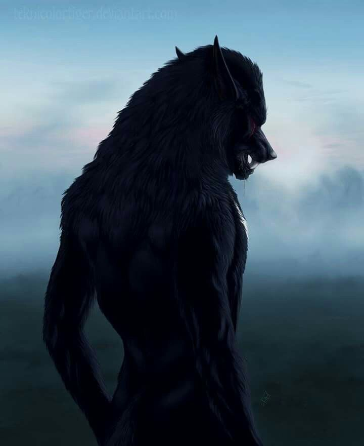

| Características: |  | Fraquezas: |
| - Criatura meio homem e meio lobo | - O lobisomem pode ser ferido apenas com a prata, seja por lâminas de prata ou projéteis. Para morrer é necessário que a fera seja atingida no coração. | |
| - Transforma-se durante a lua cheia | ||
| - Força sobre humana na forma humana e imensamente maior na forma de lobo | - Pode ser temporariamente repelido por figuras religiosas como o crucifixo. | |
| - Alimenta-se de corações humanos | ||
| - Raramente tem a capacidade de manter a razão enquanto está na forma de lobo | ||
| - É encontrado com maior frequência na América do Norte e no Norte Europeu |
De acordo com os diários de Samuel Colt, ele topou com um lupino em 1830, em Hartford. Samuel diz que a criatura aterrorizava os arredores da cidade, e muitas lendas locais surgiram sobre a critatura em muito pouco tempo. Tudo o que as autoridades encontravam eram corpos com o coração faltando e em épocas especificas, épocas que coincidiam com as noites de lua cheia. Para o Xerife local, o caso se tratava de um serial killer ou alguma gangue de malucos. Samuel Colt começou investigar o curioso caso, e em suas buscas descobriu que se tratava de um lobisomem. Samuel sempre carregou consigo o revolver de sua criação, um colt felto totalmente para caçar criaturas sobrenaturais. Levou consigo projéteis de prata e foi para floresta em plena lua cheia para encontrar a criatura. Samuel conta que encontrou a criatura enquanto devorava o coração de uma inocente criança, e que com um disparo preciso no coração da fera, o lobo caiu no chão e lentamente se transformou em humano novamente